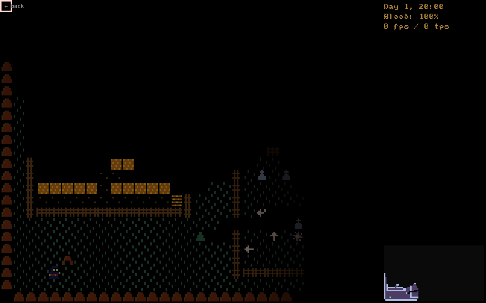

Town Vamp
Completion ▰▱▱▱▱▱▱▱▱▱ 15% · proof of concept
Town Vamp is a small town simulation where you play the vampire. I took the engine from my roguelike Lux Aeterna, ripped out all the RPG systems (loot, classes, spells, quests) and kept the parts I actually liked: field of view with light, pathfinding, zones and LDtk maps.
Six townspeople live in the town. Each has a routine (sleep, meals, home) and one to three obligations: feeding someone's children, bringing grain to the mill, opening the gate at dawn. Time runs on its own. Your blood drains all the time, and the only way to refill it is to kill someone. When a person has been missing for a day, the town tries to hand their duties to someone else: first whoever the duty was for, then anyone with a fitting role. If nobody has the free hours, the duty goes unmet and stays that way. Early deaths get absorbed. Later ones don't.
There is no journal and no clue system. People do things, some of them only when nobody is watching, and whatever you figure out happens in your head. If you get seen where you shouldn't be, people withdraw indoors. Once a death is confirmed, hunters walk the streets at night. Sunlight kills you. When the run ends, the epilogue shows what happened to each townsperson.
Controls: WASD to move, E to kill, H to hide a body, Space to pause, 1–6 to look at a townsperson, L for the log, comma / period to wait until dusk / dawn, End to leave town.
Features
- Real-time town of six townspeople with routines and obligations, schedules derived from both
- Reassignment of a dead person's duties: relationship first, then role, limited by free hours
- Private actions with witness whitelists; people break off and look for privacy when watched
- Zones with permissions, trespass, withdrawal, hunters with lanterns
- Blood clock, deadly sunlight, hiding bodies
- Epilogue with one slide per townsperson
- Field of view with light occlusion and windows you can see through
Under the hood
The whole idea fits in one function. A voided duty either finds a taker or goes on the unmet ledger (game/reassignment.go):
for _, obligation := range voided {
if taker := g.findTakerFor(obligation); taker != nil {
taker.TakeObligation(obligation)
taker.RecomputeSchedule()
continue
}
g.unmetObligations = append(g.unmetObligations, obligation)
g.PlayerMessage(obligation.Absent + ".")
}Is it a real game?
Proof of concept. All of it was written in a few days in August 2026. The loop is there: you walk, you kill, the town reacts, and a run ends with the epilogue. But the epilogue is raw data, the tuning numbers (blood drain, how much free time a routine leaves) are still guesses, and there is one town with six people.
Screenshots


Latest updates
- 2026-08-04 A clock replaces the action economy; continuous walking
- 2026-08-03 Windows: walls you can see through
- 2026-08-02 Secrecy, trespass, hunters and the epilogue
- 2026-08-02 The vampire and the town's repair
- 2026-08-02 Initial import of the Lux Aeterna engine